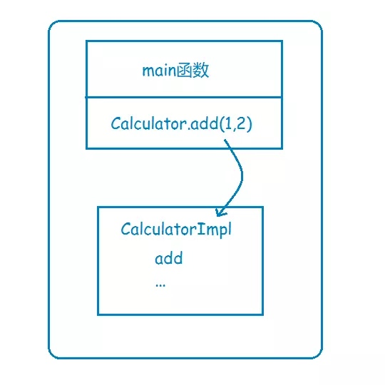
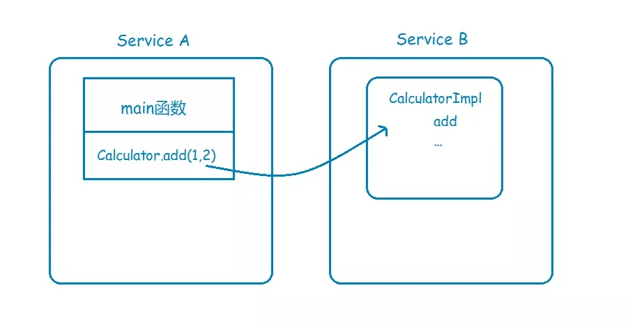
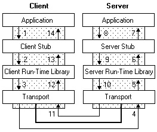

正如上一讲所说，RPC主要是为了解决的两个问题：
- 解决分布式系统中，服务之间的调用问题。
- 远程调用时，要能够像本地调用一样方便，让调用者感知不到远程调用的逻辑。
还是以计算器Calculator为例，如果实现类CalculatorImpl是放在本地的，那么直接调用即可：

现在系统变成分布式了，CalculatorImpl和调用方不在同一个地址空间，那么就必须要进行远程过程调用：

那么如何实现远程过程调用，也就是RPC呢，一个完整的RPC流程，可以用下面这张图来描述：

其中左边的Client，对应的就是前面的Service A，而右边的Server，对应的则是Service B。
下面一步一步详细解释一下。
- Service A的应用层代码中，调用了Calculator的一个实现类的add方法，希望执行一个加法运算；
- 这个Calculator实现类，内部并不是直接实现计算器的加减乘除逻辑，而是通过远程调用Service B的RPC接口，来获取运算结果，因此称之为Stub；
- Stub怎么和Service B建立远程通讯呢？这时候就要用到远程通讯工具了，也就是图中的Run-time Library，这个工具将帮你实现远程通讯的功能，比如Java的Socket，就是这样一个库，当然，你也可以用基于Http协议的HttpClient，或者其他通讯工具类，都可以，RPC并没有规定说你要用何种协议进行通讯；
- Stub通过调用通讯工具提供的方法，和Service B建立起了通讯，然后将请求数据发给Service B。需要注意的是，由于底层的网络通讯是基于二进制格式的，因此这里Stub传给通讯工具类的数据也必须是二进制，比如calculator.add(1,2)，你必须把参数值1和2放到一个Request对象里头（这个Request对象当然不只这些信息，还包括要调用哪个服务的哪个RPC接口等其他信息），然后序列化为二进制，再传给通讯工具类，这一点也将在下面的代码实现中体现；
- 二进制的数据传到Service B这一边了，Service B当然也有自己的通讯工具，通过这个通讯工具接收二进制的请求；
- 既然数据是二进制的，那么自然要进行反序列化了，将二进制的数据反序列化为请求对象，然后将这个请求对象交给Service B的Stub处理；
- 和之前的Service A的Stub一样，这里的Stub也同样是个“假玩意”，它所负责的，只是去解析请求对象，知道调用方要调的是哪个RPC接口，传进来的参数又是什么，然后再把这些参数传给对应的RPC接口，也就是Calculator的实际实现类去执行。很明显，如果是Java，那这里肯定用到了反射。
- RPC接口执行完毕，返回执行结果，现在轮到Service B要把数据发给Service A了，怎么发？一样的道理，一样的流程，只是现在Service B变成了Client，Service A变成了Server而已：Service B反序列化执行结果->传输给Service A->Service A反序列化执行结果 -> 将结果返回给Application，完毕。
理论的讲完了，是时候把理论变成实践了。
作者：柳树之
链接：https://www.jianshu.com/p/5b90a4e70783
来源：简书
著作权归作者所有。商业转载请联系作者获得授权，非商业转载请注明出处。
本文由 Sajor
创作，采用 知识共享署名4.0 国际许可协议进行许可
本站文章除注明转载/出处外，均为本站原创或翻译，转载前请务必署名
最后编辑时间为: 2020-01-02T09:43:10+08:00